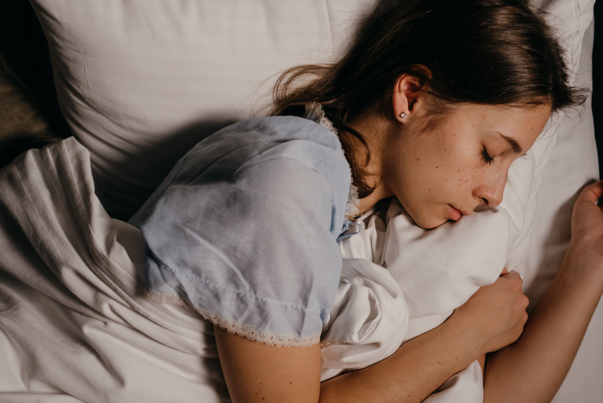
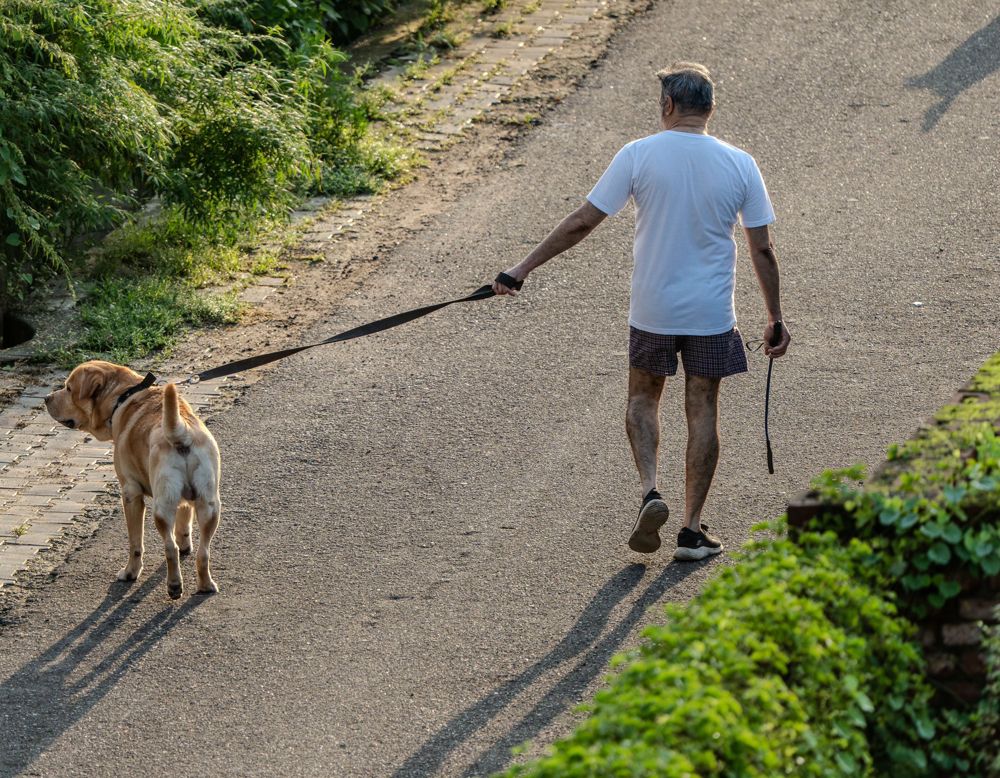
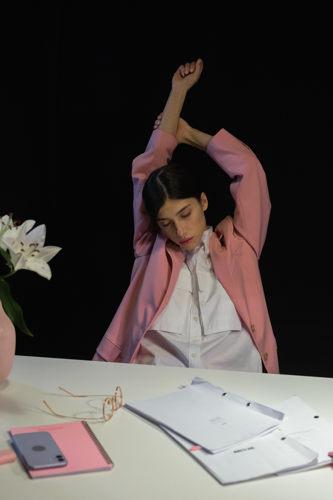
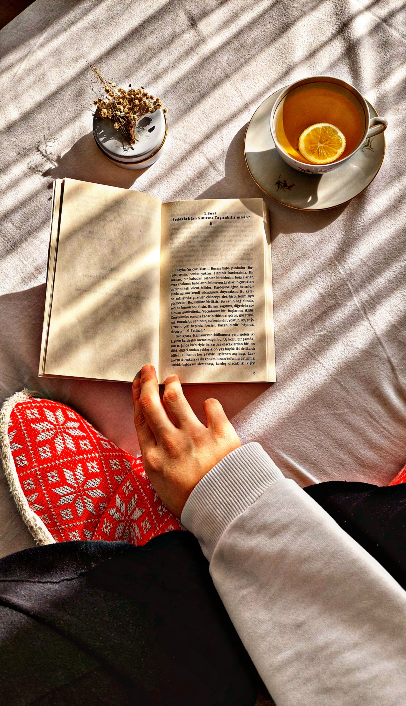

Hábitos saludables
Pequeños cambios diarios marcan la diferencia a largo plazo. No hace falta hacerlo todo a la vez: empieza por uno y suma poco a poco.
-

Descansa bien
Duerme entre 7 y 9 horas. Durante el sueño tu cuerpo se recupera del entrenamiento y regula el apetito.
-

Muévete cada día
Camina al menos 30 minutos. Mejora tu energía, tu humor y es el ejercicio más fácil de mantener.
-

Haz pausas
Si pasas muchas horas sentado, levántate y estira cada hora. Tu espalda te lo agradecerá.
-

Desconecta
Dedica un rato al día sin pantallas. Leer, pasear o simplemente respirar reduce el estrés.